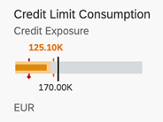

It compares that measure to one or more other measures to enrich its meaning (for example, compared to a target), and displays it in the context of qualitative ranges of performance, such as poor, satisfactory, and good.

For more information on this chart type, refer Samples documentation.
The UI.Chart Title property is used for the title.
The UI.Chart Description property is used for the subtitle.
<Annotation Term="UI.Chart">
<Record Type="UI.ChartDefinitionType">
<PropertyValue Property="Title" String="Sales Revenue" />
<PropertyValue Property="Description" String="Bullet Micro Chart" />
<PropertyValue Property="ChartType" EnumMember="UI.ChartType/Bullet" />
<PropertyValue Property="Measures">
<Collection>
<PropertyPath>BulletChartRevenue</PropertyPath>
</Collection>
</PropertyValue>
<PropertyValue Property="MeasureAttributes">
<Collection>
<Record Type="UI.ChartMeasureAttributeType">
<PropertyValue Property="Measure" PropertyPath="BulletChartRevenue" />
<PropertyValue Property="Role" EnumMember="UI.ChartMeasureRoleType/Axis1" />
<PropertyValue Property="DataPoint" AnnotationPath="@UI.DataPoint#BulletChartRevenue" />
</Record>
</Collection>
</PropertyValue>
</Record>
</Annotation>
<Annotation Term="UI.DataPoint" Qualifier="BulletChartRevenue">
<Record>
<PropertyValue Property="Title" String="Sales Revenue" />
<PropertyValue Property="Value" Path="BulletChartRevenue" />
<PropertyValue Property="TargetValue" Path="TargetRevenue" />
<PropertyValue Property="ForecastValue" Path="ForecastRevenue" />
<PropertyValue Property="MinimumValue" Decimal="100" />
<PropertyValue Property="MaximumValue" Decimal="300" />
<PropertyValue Property="Criticality" Path="Criticality" />
</Record>
</Annotation>For semantic coloring, both Criticality and
CriticalityCalculation are supported
(Criticality overrides
CriticalityCalculation).
For semantic coloring, both Criticality and
CriticalityCalculation are supported
(Criticality overrides
CriticalityCalculation).
Mandatory:
UI.Chart → ChartType:
“Bullet”UI.Chart → MeasuresUI.Chart → MeasureAttributes →
DataPointUI.DataPoint → ValueCriticalityCalculation is used for semantic coloring,
thenUI.DataPoint →
CriticalityCalculation
UI.DataPoint →
CriticalityCalculation/ImprovementDirection